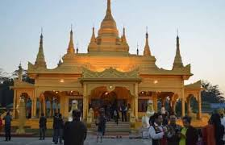
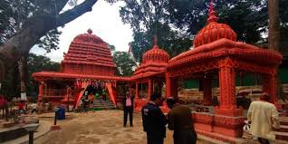
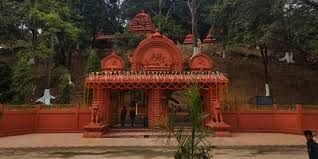

Parashuram Kund Temple


Location: Lohit district, Arunachal Pradesh, on the banks of the Brahmaputra (Lohit) River
Deity/Association: Associated with Sage Parashuram, the sixth avatar of Vishnu
Significance: Important Hindu pilgrimage site, especially during Makar Sankranti
Legend: Sage Parashuram is believed to have washed away the sin of matricide (killing his mother) at this spot
Pilgrimage: Thousands of devotees take a holy dip in the kund (lake) during January
Natural Setting: Scenic surroundings with mountains, dense forests, and river confluence
Cultural Importance: Revered by both Hindus and local tribal communities
Malinithan Temple


Location: Likabali, West Siang district (near Lohit), Arunachal Pradesh
Deity: Goddess Durga (worshipped as Malini)
Architecture: Ruins show rich Orissan (Kalinga) style stone carvings and sculptures
Historical Era: Dates back to the 10th–12th century, likely built by the Chutia or local tribal kings
Legend: Linked to the story of Lord Krishna and Rukmini—they stopped here and were blessed by Goddess Durga
Discovery: Excavated by the Archaeological Survey of India in the 20th century
Significance: A mix of Hindu mythology and tribal heritage; important archaeological and religious site
Attractions: Intricate carvings of deities, animals, and celestial beings